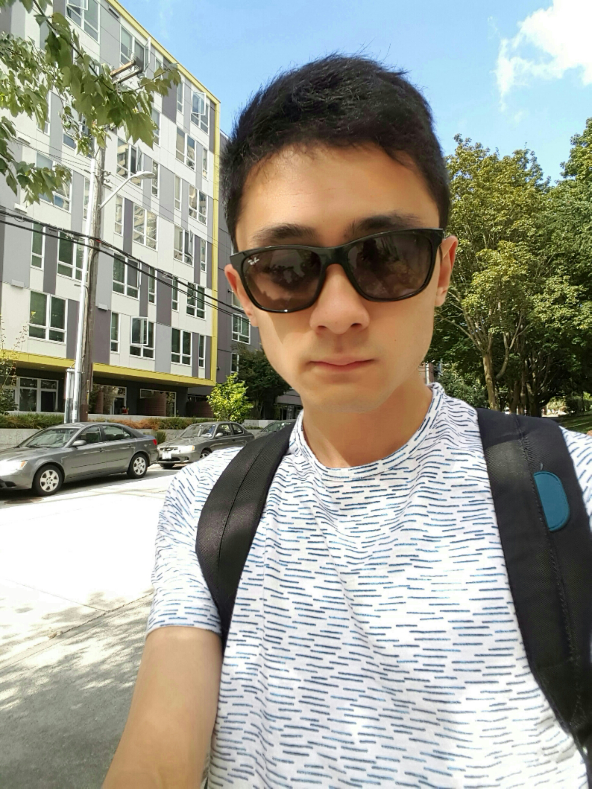

Yuguang Lee

I'm a 3rd-year PhD student advised by Professor
Linda Shapiro
from University of Washington. I'm a part of the
GRAIL
lab in UW CSE. I'm particularly interested in fast image object detection, computer graphics rendering, ray-tracing, computational photography and artificial intelligence.
I have a background in both electrical engineering and computer science, with a specialty in computer vision, and have completed coursework in CS fundamentals, sensor hardware, computer vision, computer graphics, digital signal processing and machine learning. I have also worked on various projects, including a cross-platform GPU-based / multithreading-CPU-based computational photography pipeline, a deep learning-based fast object detection system, a Lidar signal processing and interpretation system, and a CUDAGPU-based photon mapping engine. I also won 5th place out of a total of 72 teams in the 2016 CVPR face detection and classification challenge. I’m familiar with 3D reconstruction, bundle adjustment, facial landmark localization and morphing, in addition to the latest machine learning algorithms. I'm also proficient in a variety of programming languages such as Python and C++, in addition to many industry-standard toolkits and frameworks, such as OpenGL, OpenCV, LUA, Halide and Caffe.


I have a background in both electrical engineering and computer science, with a specialty in computer vision, and have completed coursework in CS fundamentals, sensor hardware, computer vision, computer graphics, digital signal processing and machine learning. I have also worked on various projects, including a cross-platform GPU-based / multithreading-CPU-based computational photography pipeline, a deep learning-based fast object detection system, a Lidar signal processing and interpretation system, and a CUDAGPU-based photon mapping engine. I also won 5th place out of a total of 72 teams in the 2016 CVPR face detection and classification challenge. I’m familiar with 3D reconstruction, bundle adjustment, facial landmark localization and morphing, in addition to the latest machine learning algorithms. I'm also proficient in a variety of programming languages such as Python and C++, in addition to many industry-standard toolkits and frameworks, such as OpenGL, OpenCV, LUA, Halide and Caffe.
Mr. Lee © 2017 · All right reserved.